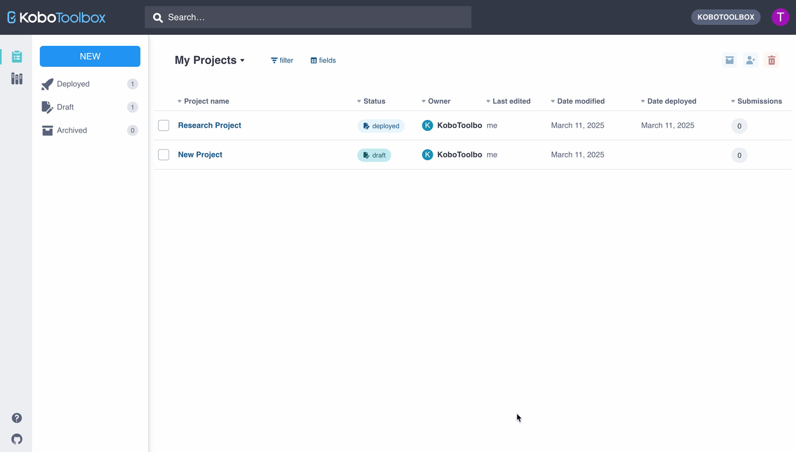

Search the knowledge base, browse our resources, and visit our forum for more detailed information
Last updated: 6 Sep 2025
This is where your intro goes. Note above that the “Last updated” code will be automatically updated with the correct article name and date when you publish, so not manual change is needed. Remember to name this file according to the article title, and end the file name with .md.
This article includes:
For help with markdown or HTML formatting, see this guide.
After creating a new article, don’t forget to add it to the index.rst file.
This is an unordered list
in markdown
This is a numbered list.
in markdown.
With a sub bullet.
This is some bold text in markdown.
This is some italic text in markdown.
This is some monospaced code in markdown.
This is a block quote (not currently used in documentation)
Embed links: To transfer ownership of your Team to another user, please contact our support team.
Learn more about our training services.
Links to other articles: For more information, see row-level permissions
Link to another section within the article. Note: just one # for all heading sizes, no space between # and anchor name, anchor tag names must be lowercase, and delimited by dashes if multi-word.
To quickly turn a URL or email address into a link, enclose it in angle brackets.
https://www.markdownguide.org fake@example.com
Add a line to separate content:
Add a blank line…
…to start a new paragraph or line break.
To add a full line break, use:

Store the images in the images folder, in a folder named after the support article. Include the folder name and image file name in the filepath above.
Click the More actions icon for the user you wish to remove.
Click Replace form.
We recommend publishing videos to YouTube and embedding a link using iframes.
Include the link of the YouTube video inside the iframe.
You can also include videos in the following way:
Column name |
Description |
|---|---|
hint |
Question hint |
guidance_hint |
Guidance hint |
required |
Option to make a question mandatory |
relevant |
Skip logic conditions for the question |
constraint |
Validation criteria for the question |
constraint_message |
Error message when validation criteria not met |
appearance |
Options for how questions are displayed |
choice_filter |
Criteria for cascading select |
parameters |
Settings for specific question types |
calculation |
Mathematical expression for calculate question |
default |
Default response for a question |
type |
name |
label |
|---|---|---|
text |
yourname |
What is your name? |
survey |
Note the | survey | at the bottom of the table.
If one of the columns is not large enough, add   spaces to make it wider, as below:
Export setting |
Description |
|---|---|
Save selection as… |
Check this option and enter a name for your export settings. When you click EXPORT, these settings will be saved and the name will appear in the Apply saved export settings box. |
Inside noteboxes and tables, use HTML to format your text. For example:
Important note: It is not possible to share projects and data between the two servers. This means that all users working on a shared project must use the same server to access the project. Add a link in HTML like this.
Note: To learn more about row-level permissions, see row-level access.
Note: To learn more about question types in XLSForm, see Question types (XLSForm.org).
Server |
URL |
|---|---|
Global KoboToolbox Server |
|
European Union KoboToolbox Server |
You can download files here and the media files here. The files are stored in ./_static/files/media/.
Line breaks in HTML:
This is the first line.
And this is the second line.
Make your text bold, italic, or monospaced code.
Add a numbered list:
Add an unnumbered list:
k-icon-angle-bar-left
k-icon-angle-bar-right
k-icon-angle-down
k-icon-angle-left
k-icon-angle-right
k-icon-angle-up
k-icon-arrow-down-left
k-icon-arrow-down-right
k-icon-arrow-down
k-icon-arrow-left
k-icon-arrow-right
k-icon-arrow-up-left
k-icon-arrow-up-right
k-icon-arrow-up
k-icon-caret-down
k-icon-caret-left
k-icon-caret-right
k-icon-caret-up
k-icon-kobo
k-icon-cascading
k-icon-drag-handle
k-icon-duplicate
k-icon-edit
k-icon-expand-list
k-icon-expand
k-icon-file-audio
k-icon-file-image
k-icon-file-video
k-icon-file-xls
k-icon-file-xml
k-icon-file
k-icon-group-split
k-icon-group
k-icon-media-files
k-icon-question
k-icon-settings
k-icon-skip-logic
k-icon-view-all
k-icon-view
k-icon-qt-acknowledge-lock
k-icon-qt-acknowledge
k-icon-qt-area-lock
k-icon-qt-area
k-icon-qt-audio-lock
k-icon-qt-audio
k-icon-qt-background-audio
k-icon-qt-barcode-lock
k-icon-qt-barcode
k-icon-qt-calculate-lock
k-icon-qt-calculate
k-icon-qt-date-lock
k-icon-qt-date-time-lock
k-icon-qt-date-time
k-icon-qt-date
k-icon-qt-decimal-lock
k-icon-qt-decimal k-icon-qt-external-xml-lock
k-icon-qt-external-xml
k-icon-qt-file-lock
k-icon-qt-file
k-icon-qt-hidden-lock
k-icon-qt-hidden
k-icon-qt-line-lock
k-icon-qt-line
k-icon-qt-meta-default
k-icon-qt-note-lock
k-icon-qt-note
k-icon-qt-number-lock
k-icon-qt-number
k-icon-qt-photo-lock
k-icon-qt-photo
k-icon-qt-point-lock
k-icon-qt-point
k-icon-qt-question-matrix-lock
k-icon-qt-question-matrix
k-icon-qt-range-lock
k-icon-qt-range
k-icon-qt-ranking-lock
k-icon-qt-ranking
k-icon-qt-rating-lock
k-icon-qt-rating
k-icon-qt-select-many-from-file-lock
k-icon-qt-select-many-from-file
k-icon-qt-select-many-lock
k-icon-qt-select-many
k-icon-qt-select-one-from-file-lock
k-icon-qt-select-one-from-file
k-icon-qt-select-one-lock
k-icon-qt-select-one
k-icon-qt-text-lock
k-icon-qt-text
k-icon-qt-time-lock
k-icon-qt-time
k-icon-qt-video-lock
k-icon-qt-video
k-icon-archived
k-icon-data-sync
k-icon-deploy
k-icon-document
k-icon-download
k-icon-drafts
k-icon-language-alt
k-icon-language-default
k-icon-language-settings
k-icon-language
k-icon-logout
k-icon-menu
k-icon-project-archived
k-icon-project-deployed
k-icon-project-draft
k-icon-project-locked
k-icon-project-overview
k-icon-project
k-icon-projects
k-icon-replace
k-icon-upload
k-icon-user-share
k-icon-user
k-icon-users
k-icon-filter-arrows
k-icon-filter
k-icon-map-view
k-icon-gallery
k-icon-globe-alt
k-icon-layer
k-icon-hide
k-icon-reports
k-icon-sort-ascending
k-icon-sort-default
k-icon-sort-descending
k-icon-table
k-icon-unfreeze
k-icon-folder-in
k-icon-folder-out
k-icon-folder-plus
k-icon-folder-public
k-icon-folder-shared
k-icon-folder-subscribed
k-icon-folder
k-icon-freeze
k-icon-block
k-icon-library-public
k-icon-library
k-icon-template-locked
k-icon-template
k-icon-alert
k-icon-check-circle
k-icon-check
k-icon-close
k-icon-expand-arrow
k-icon-flows
k-icon-help-articles
k-icon-help
k-icon-information
k-icon-link
k-icon-lock-alt
k-icon-lock
k-icon-minus
k-icon-more-vertical
k-icon-more
k-icon-notification
k-icon-pause
k-icon-play
k-icon-plus
k-icon-search
k-icon-spinner
k-icon-stop
k-icon-trash
k-icon-warning
k-icon-email
k-icon-help-academy
k-icon-help-forum
k-icon-logo-github
k-icon-logo-instagram
k-icon-logo-linkedin
k-icon-logo-twitter
k-icon-mail
k-icon-intercom
k-icon-subscribe
k-icon-unsubscribe
k-icon-attach
k-icon-editor
k-icon-heatmap
k-icon-pdf
k-icon-pins
k-icon-print
k-icon-spreadsheet
Did you find what you were looking for? Was the information clear? Was anything missing?
Share your feedback to help us improve this article!
KoboToolbox is maintained by Kobo Inc.